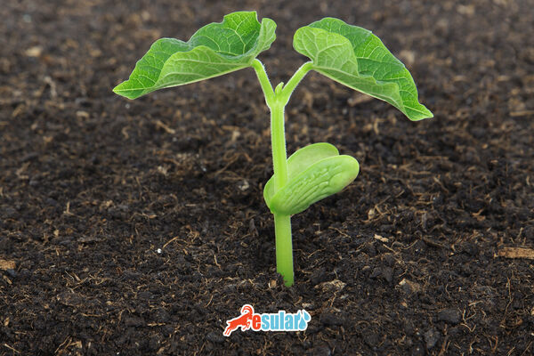

Kuru Fasulye Yetiştiriciliği
Ülkemizde nohuttan sonra en çok üretimi yapılan baklagildir. Kuru fasulye topraktan önemli miktarlarda besin maddesi çeker. Çapa bitkisi ve baklagil olması nedeniyle ekim nöbetinde kullanılması önerilir. Buğdaygillerin ardından ekim nöbetine alındığında daha olumlu sonuçlar elde edilir. Toprağın azot ve humus içeriğini artırarak, sonraki bitkilerin verimini olumlu yönde etkiler.
Kuru Fasulye Gübreleme
İlkbaharda sürümden önce, dekara 2–3 ton çiftlik gübresi verilmesi, toprak kalitesini artırarak bitki gelişimi ve verim açısından olumlu bir etki sağlar. Gübre miktarının en uygun şekilde belirlenmesi için toprak analizi yapılması önemlidir. Ekim öncesi toprak hazırlığı sırasında, dekara 12–16 kg arasında DAP (Diamonyum fosfat) uygulaması yapılmalıdır. Aşırı kireçli topraklarda bitkinin çinko alımını engelleyebilir, bu durumda dekara yaklaşık 3 kg çinko sülfat uygulanarak verim artışı sağlanabilir. Kuru fasulye yetiştiriciliğinde, üst gübreleme işlemi genellikle önerilmemektedir.
Hastalık ve Zararlılarla Mücadele
Tohumdan çıkışın ardından, fasulye bitkisinin danaburnu zararlısına karşı korunması için ilaçlı kepek uygulanmalıdır. Kuru fasulyede sıkça görülen başlıca hastalıklar arasında Antraknoz, Pas Hastalığı, Fasulye Mozaik Virüsü ve Kök Çürüklüğü bulunmaktadır. Bu hastalıklara karşı korunmak için ilaçlı tohumlar kullanılmalı ve uygun bir fungusit ile ilaçlama gerçekleştirilmelidir. Fasulyede ortaya çıkan en önemli zararlılar arasında fasulye böceği (Bruchus), yaprak bitleri ve kırmızı örümcekler bulunmaktadır. Bu zararlılara karşı mücadelede uygun bir insektisit kullanılmalıdır.
Kuru fasulye kaç günde hasat olur?
Kuru fasulyenin hasat süresi, çeşit ve yetişme koşullarına bağlı olarak değişiklik gösterebilir. Genellikle kuru fasulye ekiminden hasada kadar geçen süre 80 ila 120 gün arasında değişebilir. Fasulye bitkisi çiçeklenme döneminden olgunlaşma sürecine geçene kadar bu süre içinde gelişir ve hasat için uygun hale gelir. Hasat zamanı genellikle baklaların olgunlaşma süreci tamamlandığında, tane rengi değişiklik gösterip kuruduğunda gerçekleştirilir.